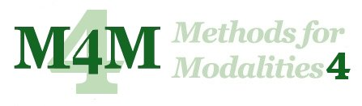

|
|  |
|
 |
|
|
|
|
|
!!!! REGISTRATION IS NOW OPEN !!!!
Poster of the conference available here
PROGRAM AVAILABLE |
|
|
|
 |
| The workshop "Methods for Modalities" (M4M)
aims to bring together researchers interested in developing
algorithms, verification methods and tools based on modal
logic. Here the term "modal logics" is conceived broadly,
including description logic, guarded fragments,
conditional logic, temporal and hybrid logic, etc. |
|
|
| To stimulate interaction and transfer of
expertise, M4M will feature a number of invited talks
by leading scientists, research presentation aimed at
highlighting new developments, and submissions of system
demonstrations. We strongly encourage young researchers and
students to submit papers and posters, especially for
experimental and prototypical software tools which are
related to modal logics.
Submissions of regular paper is now closed, but posters
and system demos are still accepted to encourage broad
participation. Such contributions should be
presented on two pages of text.
Proceedings will appear online and as a Humboldt
university report. Depending on the submissions, papers may be selected to
appear in a special issue of an appropriate journal.
Submission is by internet or email. You can (preferrably) upload your
PostScript or PDF contribution to the address
http://www.easychair.org/M4M-4/submit/ or (alternatively) send it to
m4m-4@first.fraunhofer.de.
Authors are advised to prepare their contributions in LaTeX.
Camera ready versions of accepted papers should use the
following style.
|
|
 |
|
- Extended Deadline for submissions: September 15th, 2005
- Notification: Octobre 17, 2005
- Camera ready versions: November 8, 2005
- Workshop dates: December 1-2, 2005
|
|
|
| The following people have agreed to give long
presentations:
- François Laroussinie, ENS Cachan and CNRS.
Title: Timed Modal Logics for the Verification of Real-Time
Systems.
- Martin Lange, Ludwig-Maximilians-Universität.
Title: Temporal Logics for Non-Regular Properties
- Wim Martens, Hasselt University.
Title: The Typechecking Problem for XML Transformations.
- Boris Motik, Universität Karlsruhe.
Title: Description Logics and Disjunctive Datalog - More Than just
a Fleeting Resemblance?.
- Boris Konev, University of Liverpool.
Title: Theory and Practice of Theorem Proving for Monodic
First-Order Temporal Logic.
- Uwe Scheffler, Humboldt Universität.
Title: Vague is Modal and Predicate Modifying.
The following is the list of accepted papers:
- Franz Baader, Carsten Lutz and Boontawee Suntisrivaraporn: Is Tractable
Reasoning in Extensions of the Description Logic EL Useful in Practice?
- Thomas Bolander and Torben Braüner: Two Tableau-Based Decision Procedures
for Hybrid Logic
- Davide Bresolin and Angelo Montanari: A tableau-based decision procedure for
a branching-time interval temporal logic
- Yegor Bryukhov: Automatic proof search in logic of justified common knowledge
- Mika Cohen and Mads Dam: A Completeness Result for BAN Logic
- Massimo Franceschet and Enrico Zimuel: Modal logic and navigational XPath:
an experimental comparison
- Regis Gascon: Verifying qualitative and quantitative properties with LTL
over concrete domains
- Laura Giordano, Valentina Gliozzi, Nicola Olivetti and Camilla Schwind:
Extensions of Tableau calculi for preference-based conditional logics
- Johan W. Klüwer and Arild Waaler: Natural deduction for belief "at most"
- Mathis Kretz, Gerhard Jäger and Thomas Studer: Cut-free axiomatizations for
stratified modal fixed point logic
- Martin Mundhenk, Thomas Schneider, Thomas Schwentick and Volker Weber:
Complexity of Hybrid Logics over Transitive Frames
- Nicola Olivetti and Gian Luca Pozzato: KLMLean 1.0, a Theorem Prover for
Logics of Default Reasoning
- Evangelos Tzanis: Hybrid Logic with operations on nominals
- Wouter van Atteveldt and Stefan Schlobach: A Modal View on Polder Politics
- Dirk Walther: ATEL with Common and Distributed Knowledge is ExpTime-Complete
- Evgeny Zolin: Query answering based on modal correspondence theory
|
|
|
|
The program
committee for M4M consists of
- Holger Schlingloff, Humboldt University / FIRST (local organizations);
- Carlos Areces, INRIA Lorraine;
- Patrick Blackburn, INRIA Lorraine;
- Torben Brauner, Roskilde University;
- Stephane Demri, ENS de Cachan;
- Enrico Franconi, Free University of Bozen-Bolzano,
- Rajeev Gore, The Australian National University and NICTA;
- Ian Horrocks, University of Manchester;
- Joost-Pieter Katoen, RWTH Aachen;
- Maarten de Rijke, University of Amsterdam;
- Renate Schmidt, University of Manchester; and
- Frank Wolter, University of Liverpool.
|
|
 |
|
The Early Registration Fee (until Nov. 25th, 2005) is 160.00 euros. It includes
a copy of the conference proceedings, lunches, coffee and refreshments, and
the excursion with conference dinner. Student Registration Fee (until Nov.
25th, 2005) is 100.00 euros. It includes a copy of the conference proceedings,
lunches, coffee and refreshments.
Late and on-site registrations will be
possible at a rate of 185.00 euros and 125.00 euros, respectively.
On-site registration is with cash payment only. Additional
tickets for the excursion and conference dinner can be purchased at a price
of 60.00 euros each.
Payment is by credit card and fax only. To register, print and complete
the registration form provided at this link. Fax the
completed form with credit card information to ++49-30-6392-1812. If
you have queries about the registration, contact m4m-4@first.fraunhofer.de.
Travel and Accomodation:
Fraunhofer FIRST in Berlin-Adlershof can be reached conveniently with most
transportation means. For detailed travel information on how to reach FIRST
by plain or train, see http://www.first.fhg.de/Approach-by-train.
Information on driving to FIRST can be found at
http://www.first.fhg.de/approach-by-car.
Please make your hotel reservation yourself, independent from the conference
registration. Here is a list of suggested hotels:
- VERY CLOSE TO FRAUNHOFER FIRST
- Ibis Hotel Adlershof
Rudower Chaussee 15
12489 Berlin
link
- Hotel/ Boardinghouse Am Campus
Rudower Chaussee 14
12489 Berlin
link
- NEAR FRAUNHOFER FIRST
- NH Berlin-Treptow
Spreestr. 14
12439 Berlin
link
- Courtyard Marriott Berlin-Köpenick
Grünauer Str. 1
12557 Berlin
link
- CITY EAST
- Hotel Unter den Linden
Unter den Linden 14
10117 Berlin
link
- Park Inn
Alexanderplatz 8
10178 Berlin
link
- CITY WEST
- Möwenpick-Hotel
Schöneberger Str. 3
10963 Berlin
link
- Hotel Excelsior
Hardenbergstr. 14
10623 Berlin
link
- NIGHT LIFE (CITY EAST: FRIEDRICHSHAIN)
- INN SIDE Residence-Hotel
Lange Str. 31
10243 Berlin
link
- Hotel Upstalsboom
Gubener Str. 42
10243 Berlin
link
When making your choice, please consider that travel between Adlershof and
Berlin-City takes approximately 40 Minutes by public transport. There are
also very many other hotels in all price categories available; see one of
the hotel reservation sites at
http://www.berlin.de/english/accommodation/index.html or
http://www.berlin-info.de/english/hotels/.
Contact the hotels directly and make
your booking. M4M-4 cannot arrange accomodation for participants.
|
|
|
Methods for
Modalities
Maintained by Carlos Areces
areces (at) loria.fr
|